商品素材准备
当前做法：整理商品素材图，提炼商品卖点，明确目标用户。
当前挑战：如何针对特定人群抓住最有转化潜力的商品卖点？
01 · 用户故事
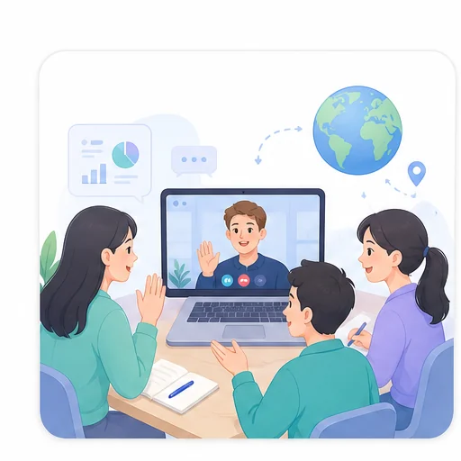
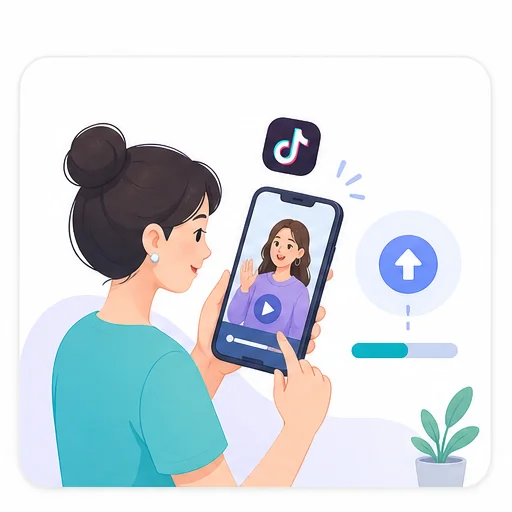
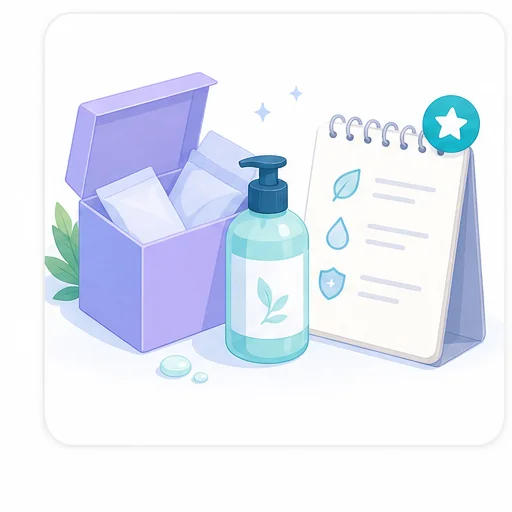
作为一个正在拓展海外短视频带货市场的跨境商家或投放团队， 我想要一个快速把商品卖点转化为 AI 带货视频的一键化生成工具， 以便于用更低成本生产、测试和投放更有高表现潜力的短视频素材。
02 · 用户旅程地图
用户通常需要在多个工具之间完成商品整理、爆款参考、策略拆解、脚本生成和视频修改，核心痛点是流程割裂、策略难复用、修改成本高。
当前做法：整理商品素材图，提炼商品卖点，明确目标用户。
当前挑战：如何针对特定人群抓住最有转化潜力的商品卖点？
当前做法：训练账号内容流为垂类推荐，手动收集爆款视频，或通过第三方数据网站搜集相似商品视频。
当前挑战：手动刷账号和收集数据费时费力；仅凭产品表面相似度筛选参考，难判断爆款策略是否适配当前商品。
当前做法：用 GPT、爆款拆解工具等分析脚本结构、文案话术和画面展示。
当前挑战：策略学习停留在单条视频的模仿照搬，缺少对多条案例的总结归纳和融合贯通。
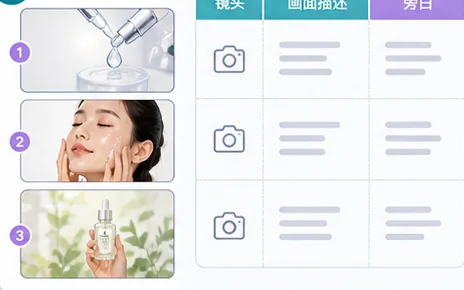
当前做法：用文生图模型生成分镜图，用大模型生成可执行脚本，包括镜头、画面描述、旁白和声效。
当前挑战：多平台切换复杂，策略靠手动搬运，前期确定的总体策略不一定能贯彻执行。
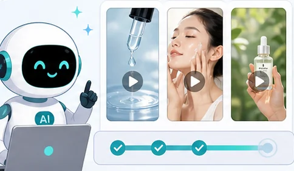
当前做法：用 Seedance、Kling、Veo、ComfyUI 等工具生成短视频片段。
当前挑战：一键式生成工具容易出现抽卡问题，不满意时常要整条重生成，满意片段也难以保留复用。
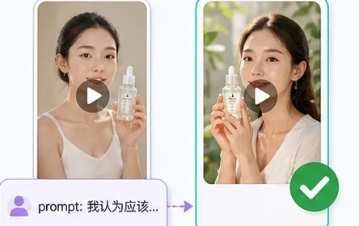
当前做法：下载多个生成版本，在本地文件夹或剪辑工具中逐条查看、对比和筛选。
当前挑战：版本管理混乱，缺少在同一页面对不同版本进行直观对比和快速优选的能力。
03 · 竞品分析
市面已有产品大多沿着两条路线发展：一类用数据和爆款参考降低生成门槛，另一类用画布和节点提升创作可控性。
将脚本、分镜、图片、视频、音频等内容拆成可连接节点，支持用户按步骤搭建和调整生成流程。
有一定 AIGC 使用经验、希望精细控制生成过程的创作者和视频团队。
学习和配置成本更高，策略方向主要依赖用户自行判断，缺少海量爆款案例的策略归纳与推荐。
04 · 痛点洞察 & 产品机会
Ad Studio 的机会： 把两类路线连接起来，既基于爆款案例归纳可迁移策略，又支持分镜级生成、反馈迭代和版本优选。
×流程割裂：商品、策略、脚本和生成结果分散在多个工具里，创作上下文容易丢失。
✓全流程整合：串联商品诊断、爆款参考、策略选择、脚本分镜和视频生成。
×策略学习低效：参考视频主要靠手动收集，且容易停留在单条视频照搬，难判断策略是否适配当前商品。
✓爆款策略召回与提炼：基于产品诊断召回相似高表现视频，并归纳 Hook、Display、CTA 等可迁移策略结构。
×反馈闭环缺失：一键生成容易抽卡，不满意时常要整条重生成，多个版本也难以直观对比。
✓反馈迭代与版本优选：支持局部修改、版本保存、对比和回退，在同一页面完成反馈与优选。
“Ulike Air 10 IPL 美容脱毛仪，采用冰感降温技术，帮助用户更舒适、高效地完成居家脱毛。”
系统从商品信息中提取六类关键特征，并据此完成相似商品匹配。
系统结合商品诊断与爆款视频，为用户推荐三组可解释的广告策略组合。
该组合在与当前商品最相似的高表现视频中匹配度最高：先切入居家脱毛疼痛、低效等问题，再用真实操作证明冰感体验与脱毛效果，最后承接商品入口，形成从痛点共鸣到购买转化的完整链路。
高播放样本更依赖前几秒的视觉吸引：用冰感、闪光等感官画面抓住注意力，通过产品特写强化记忆，再以真实体验和安全承诺降低顾虑，在保留内容感的同时承接转化。
高销量样本更强调明确利益与立即购买理由：用优惠价值钩子建立价格吸引力，清晰展示套装与赠品构成，再以折扣权益收口，缩短用户的购买决策路径。
系统将选定策略转化为完整分镜方案，并保留标题、风格、场景等可解释字段。用户可通过 Prompt 反馈生成新版本，在不同分镜方案间快速切换比较。
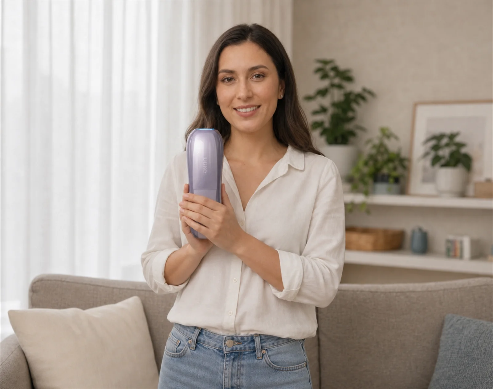
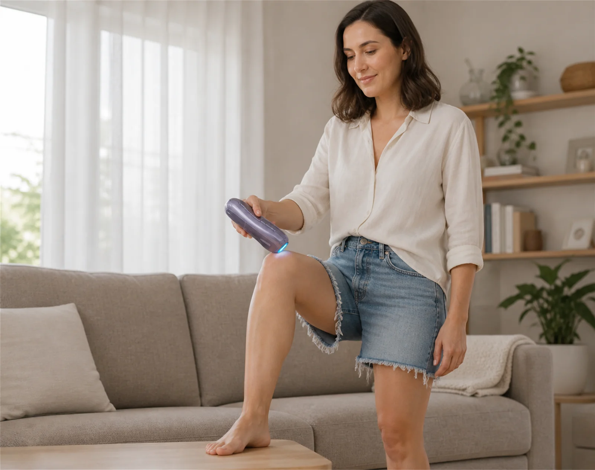
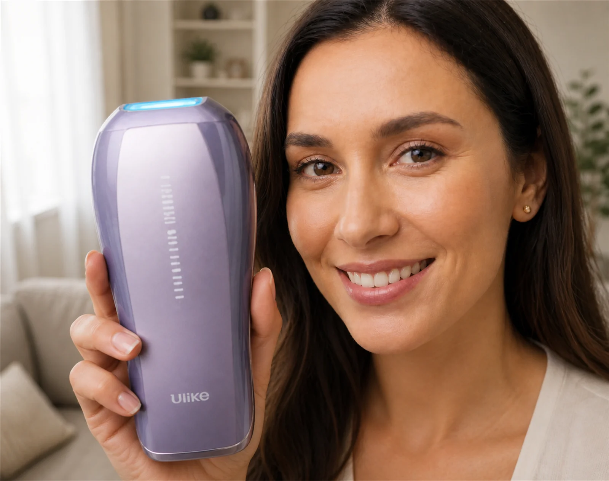
分镜反馈“让创作者坐在沙发上。”
系统保留钩子、展示与转化片段的不同版本，支持用户逐段反馈、优选片段并自动拼接完整视频。
 ×
×旁白反馈“缩短开头旁白，直接点出脱毛痛点。”
✓ ×
×动作反馈“在小臂上展示脱毛过程。”
 ✓
✓ ✓
✓将通过审核的钩子、展示与转化片段自动拼接为完整带货视频。
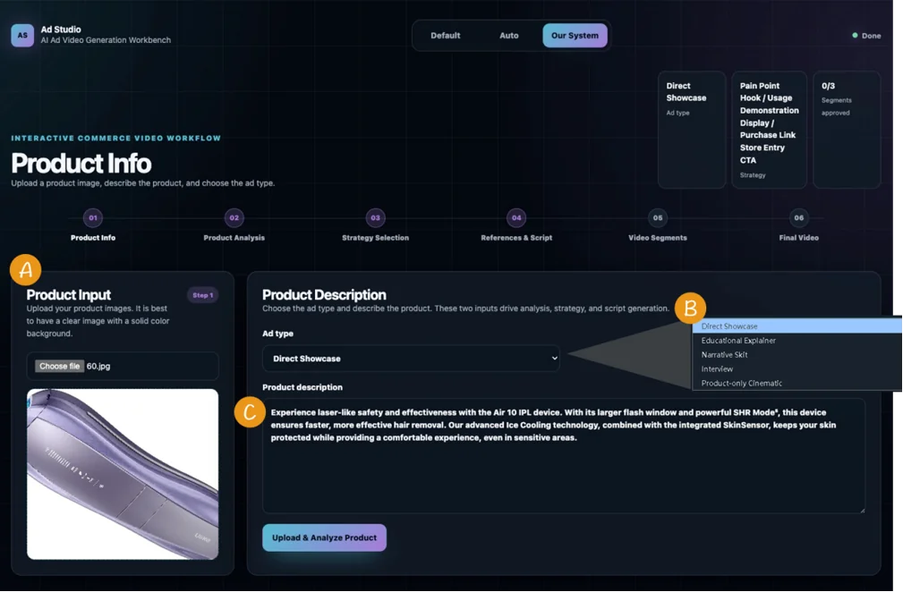
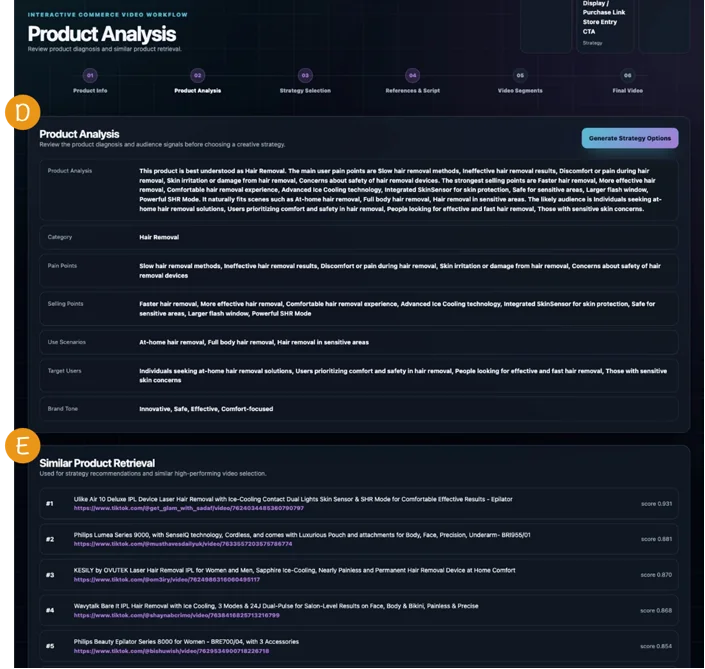
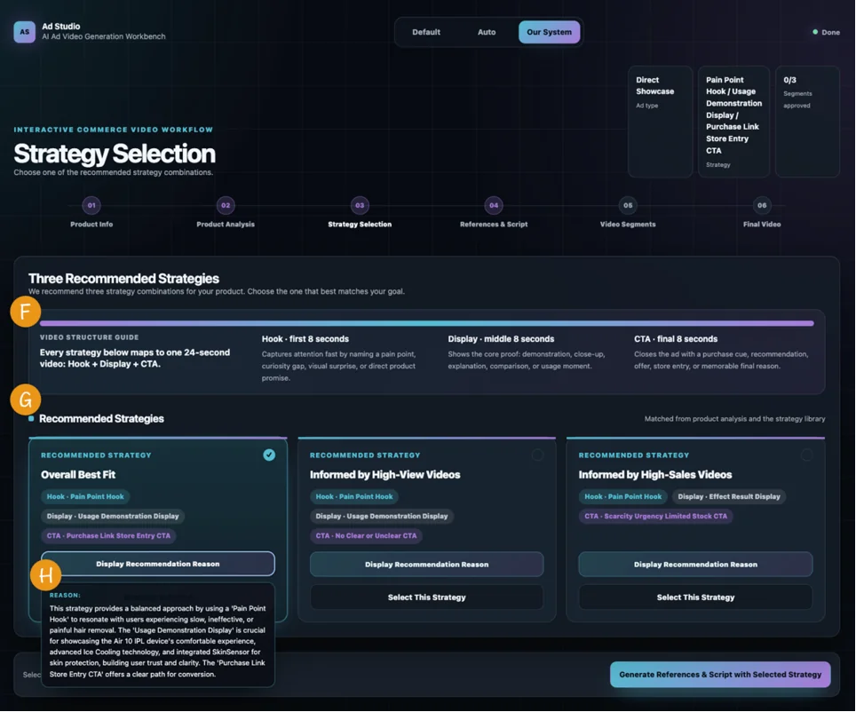
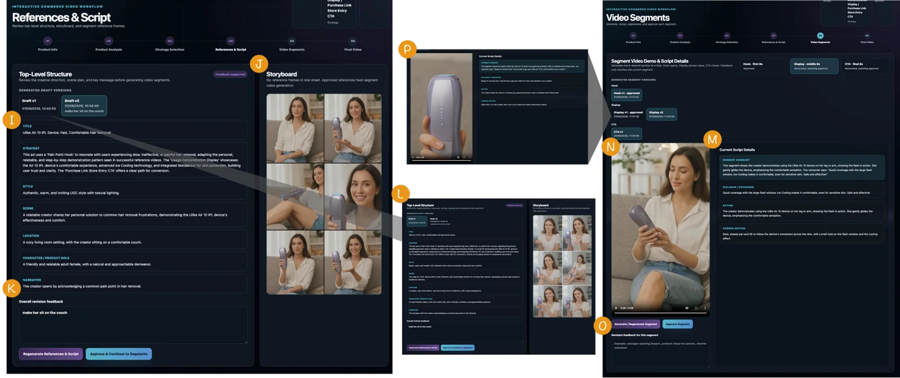
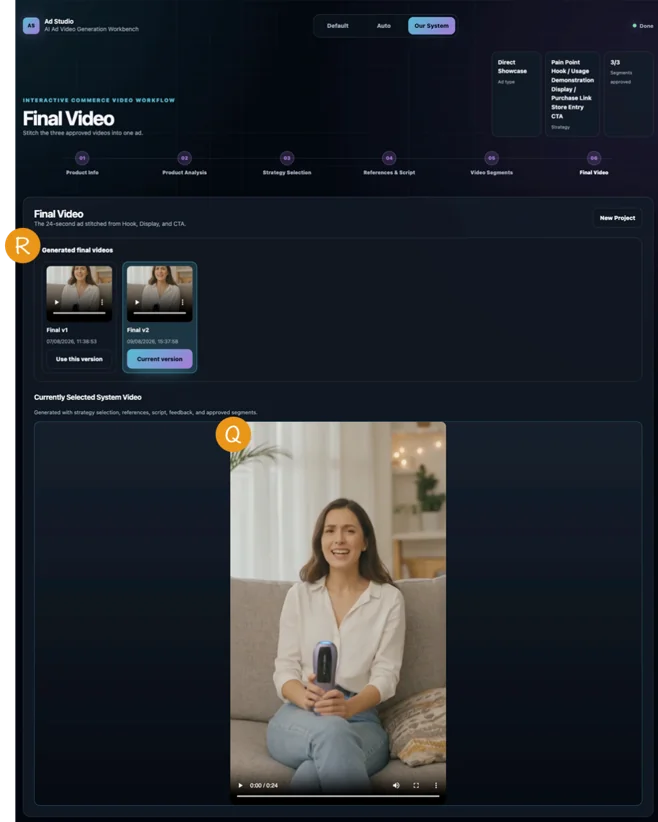
06 · 指标评测体系
评测体系围绕北极星指标“商品成片采纳率”展开，同时监测过程、结果与成本三类指标：过程侧定位各生成环节中的关键问题；结果侧评估最终成片质量、用户满意度与转化意愿；成本侧测算各环节生成时长与费用。
作为北极星指标，用于衡量系统是否能在时间、轮次和成本限制内，把单个商品稳定转化为可投放成片。
用于衡量钩子、展示、转化等视频片段素材的实际利用效率，判断多轮生成是否造成素材浪费。
把质量问题定位到具体生成步骤，而不是只看最终成片。
用观众问卷和模型审查共同评估最终视频本身质量，以及点击、购买和分享等转化意向。
把平均生成时长和模型调用成本拆到各个生成步骤，定位最主要的时间和费用来源。
按 1 个分镜图 + 3 个视频片段计算。
按 1 个分镜图 + 3 个视频片段计算。
按 1.4 轮分镜图 + 5.2 个视频片段计算。
按 1.4 轮分镜图 + 5.2 个视频片段计算。